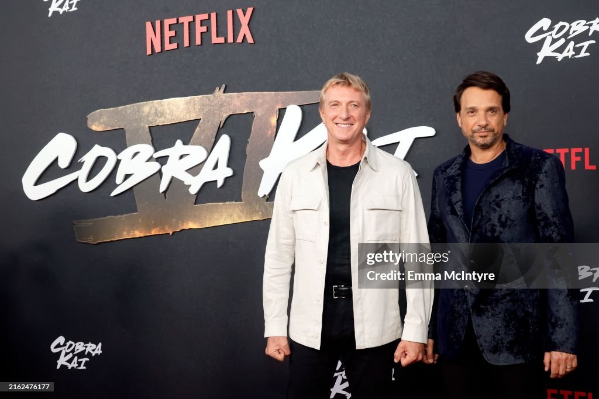

Bem-vindo ao mundo de Cobra Kai
Quero conhecer!O que é Cobra Kai?
Cobra Kai é uma série de televisão americana que continua a história de *Karate Kid* nos dias atuais. A trama segue Johnny Lawrence, um ex-lutador de karatê que reabre a dojo Cobra Kai, enquanto tenta reconstruir sua vida e se reconectar com seu passado. Ao mesmo tempo, Daniel LaRusso, seu antigo rival, agora um empresário de sucesso, se vê diante de uma nova geração de jovens aprendendo artes marciais. A série mistura ação, drama e comédia enquanto explora temas como redenção, amizade e rivalidade.
Galeria
